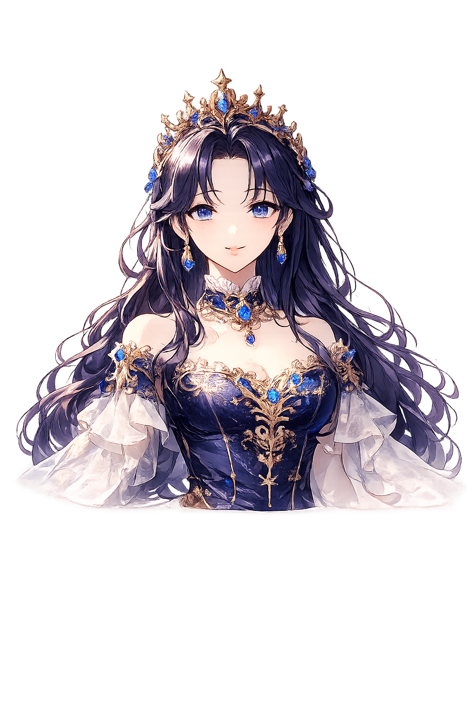

✨ Thinking
☕ Serin AI
공주님. 오늘 무엇을 도와드릴까요?
일정 정리, 퀘스트 생성, 메모 요약, 검색까지 제가 함께하겠습니다.
오늘 브리핑 시작
음성으로 부르기
💬 세린과 대화
공주님, 오늘 회의가 2건 있습니다. 먼저 회의 자료를 정리해드릴까요?
첫 번째 회의 자료 정리해줘.

좋습니다. 관련 메모와 일정, 이전 대화 기록을 묶어 브리핑 카드로 정리하겠습니다.
전송
🎤
🏰
홈
📜
퀘스트
✨
📅
캘린더
⚙️
설정